A dining table centerpiece does more than fill empty space in the middle of the table, it anchors the whole room and sets the tone before anyone even sits down. The right one works for both an everyday dinner and a more formal occasion, without needing to be swapped out every time.
None of the ideas below require a florist or a big budget. Most come down to one strong focal point, kept simple enough to stay out of the way of actual conversation across the table.

Choosing the Right Centerpiece
Matching the shape of the centerpiece to the shape of the table makes a bigger difference than most people expect, a long, low arrangement suits a rectangular table, while a single rounder piece tends to work better on a square or round one.
Scale matters just as much: a centerpiece that's too small gets lost, while one that's too large overwhelms the table entirely.
Why Centerpieces Matter More Than You'd Think
A centerpiece does real work anchoring the whole dining space, pulling the table together the way a rug pulls together a living room.
Function still matters here too. A centerpiece that's too tall or too wide gets in the way of actually passing dishes and seeing across the table.
15 Dining Table Centerpiece Ideas
1. Everyday Centerpiece With Function
The centerpieces that last the longest tend to be the ones that actually do something beyond looking nice.
A salt and pepper set paired with a small vase, or a condiment tray that doubles as decor, keeps the table styled even during an ordinary weeknight dinner.
Functional centerpieces hold up to daily use in a way purely decorative ones often don't, which makes them worth prioritizing for a table that gets used every day.
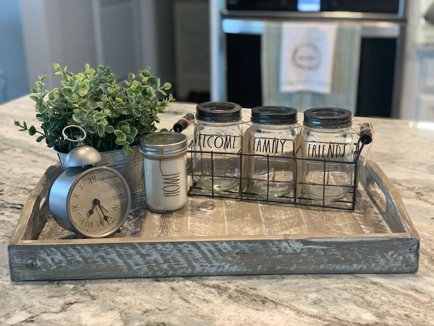
2. Vintage or Antique Centerpiece Piece
A vintage bowl or container adds real soul to a dining table in a way new pieces rarely manage.
Thrifted or inherited pieces, with a bit of visible age or patina, bring genuine character and a sense of history to the table.
A single old piece tends to make an entire room feel more layered and collected, rather than freshly furnished.
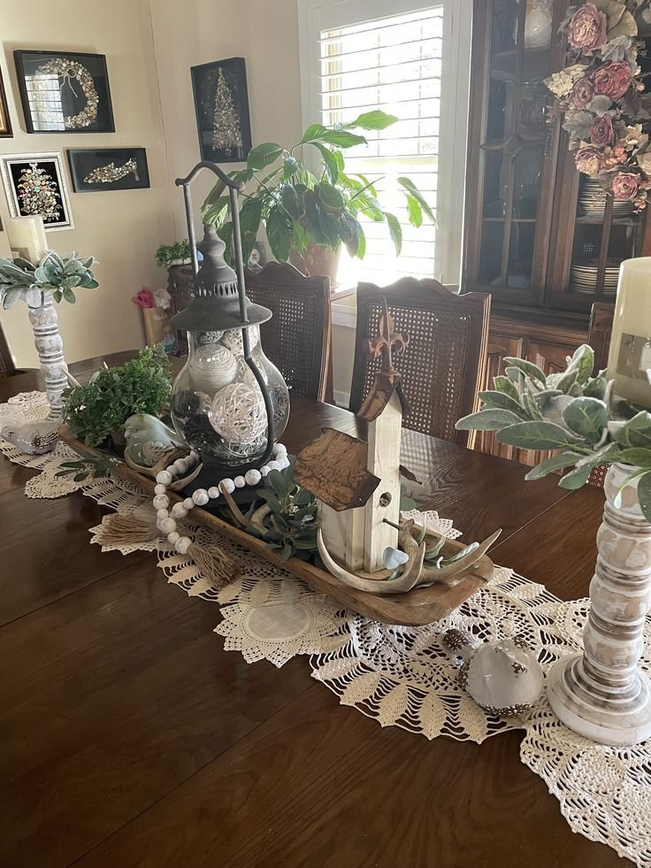
3. Mixed Metals for a Modern Look
Mixing gold and black accents brings a genuinely modern feel to a centerpiece without losing any warmth.
Candlesticks, small trays, or vases in contrasting metal finishes build visual interest through material alone, without needing much else.
This combination suits a contemporary dining room particularly well, where a sleeker overall aesthetic is already in play.
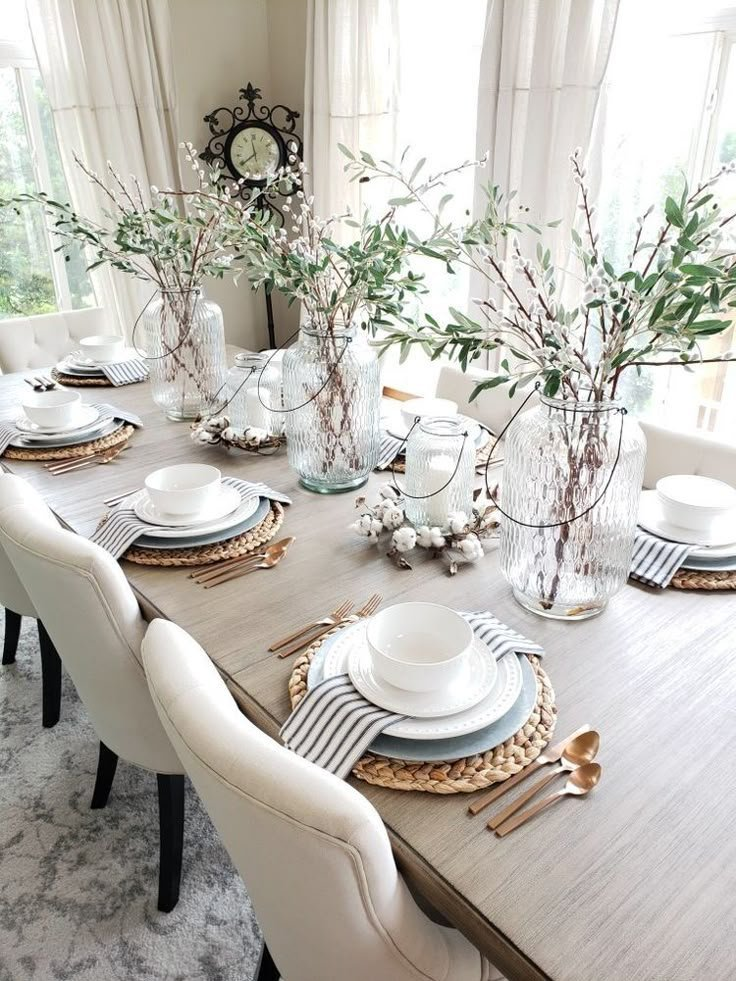
4. A Seasonal Centerpiece You Can Swap Easily
Seasonal decor keeps a dining space feeling genuinely current throughout the year, rather than static.
Pumpkins and foliage in fall, fresh blooms in spring, pinecones and candles in winter, the base styling stays largely the same, with just the seasonal elements rotating in and out.
Using a tray as the base makes these seasonal swaps considerably easier, since the whole arrangement can be lifted and replaced at once.
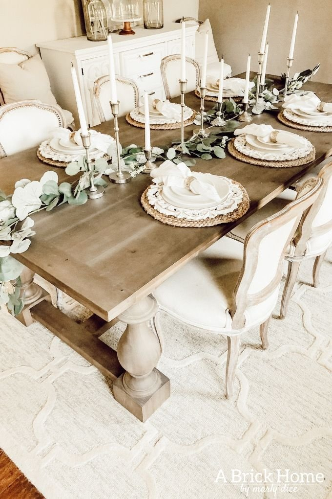
5. Neutral Table Runner With Minimal Decor
Sometimes the runner itself becomes the centerpiece, with very little else needed on top of it.
A neutral linen or cotton runner laid down the center of the table does most of the visual work on its own.
Adding just one small object in the middle, then stopping, is the real trick here, restraint matters more than it might seem.
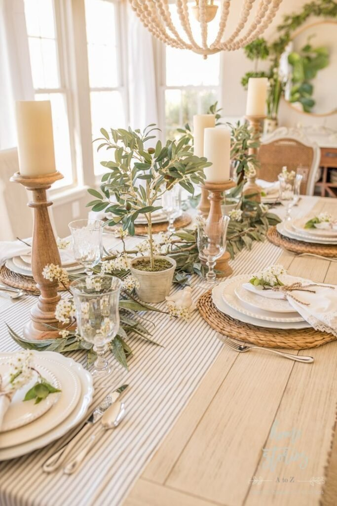
6. Glass Cloche With Decorative Accent
A cloche frames a single item beautifully, turning something small into a genuine focal point.
Moss, a small floral arrangement, or a decorative object placed underneath the glass reads as considered and a little precious, in the best sense.
It's a centerpiece that feels thoughtful without ever becoming loud or overdone.
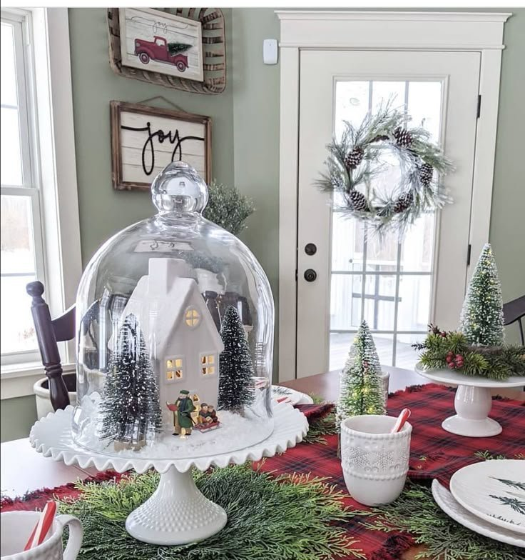
7. Rustic Dough Bowl With Fillers
A dough bowl works well in almost any dining room, regardless of overall style.
Filled with pinecones, dried florals, faux fruit, or seasonal greenery, it builds a warm, layered look with very little actual effort.
It's a strong choice for anyone drawn to cozy, textured decor over anything too sleek or minimal.
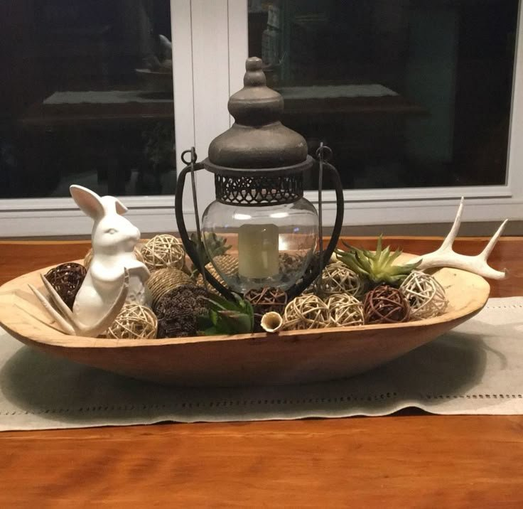
8. Stacked Coffee Table Books With Decor
Breaking the usual rules occasionally pays off, books on a dining table feel genuinely fresh when styled with intention.
A small stack, topped with a candle or a small object, builds height and interest without requiring any floral arrangement at all.
Keeping the stack minimal matters here; overdoing it undercuts the charm that makes this idea work in the first place.
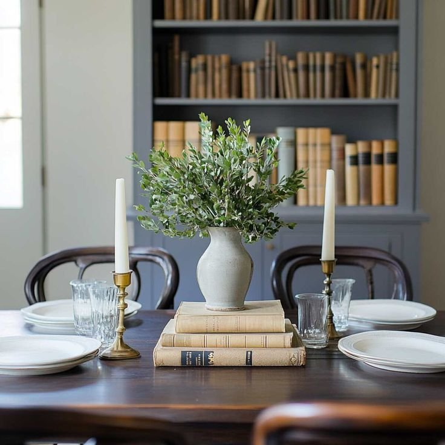
9. Sculptural Object as a Centerpiece
Flowers aren't required for every table, sometimes a sculptural piece brings more edge and personality.
A ceramic form, an abstract wood carving, or a metal sculpture all work well for anyone who wants the centerpiece to feel a little more unexpected.
This option reads as confident the moment someone walks into the room, in a way a floral arrangement rarely manages on its own.
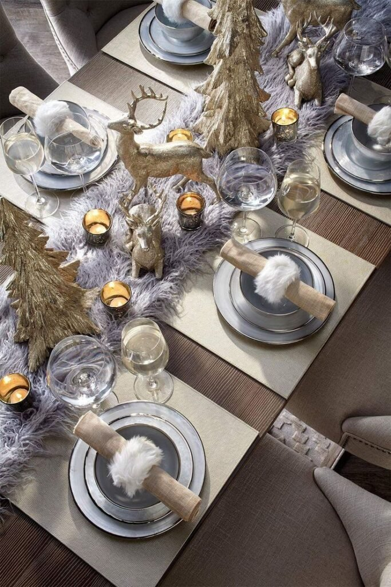
10. Greenery Runner Down the Center
A runner of greenery down the center of the table brings freshness without tipping into anything too formal.
Faux greenery works just as well as real, especially for anyone who'd rather skip the maintenance, from across the table, the difference is rarely noticeable.
Keeping the runner low and loose, rather than tightly arranged, reads as more natural and less staged.
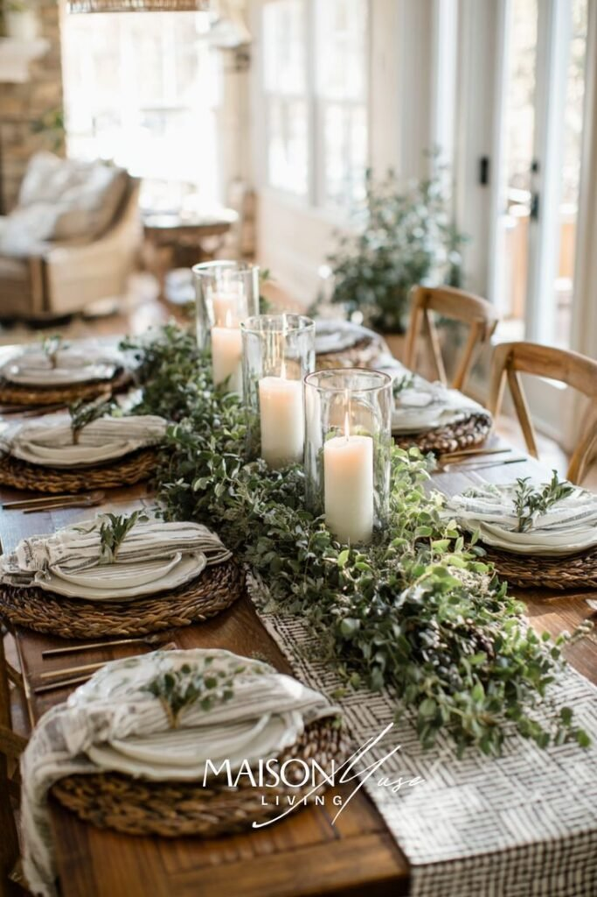
11. Bowl of Seasonal Fruit
For something that feels genuinely lived-in rather than purely decorative, a bowl of seasonal fruit adds both color and function.
It works year-round, simply by swapping whatever fruit is in season into the same bowl.
It also happens to encourage healthier snacking, which is a small but genuine bonus beyond the visual appeal.
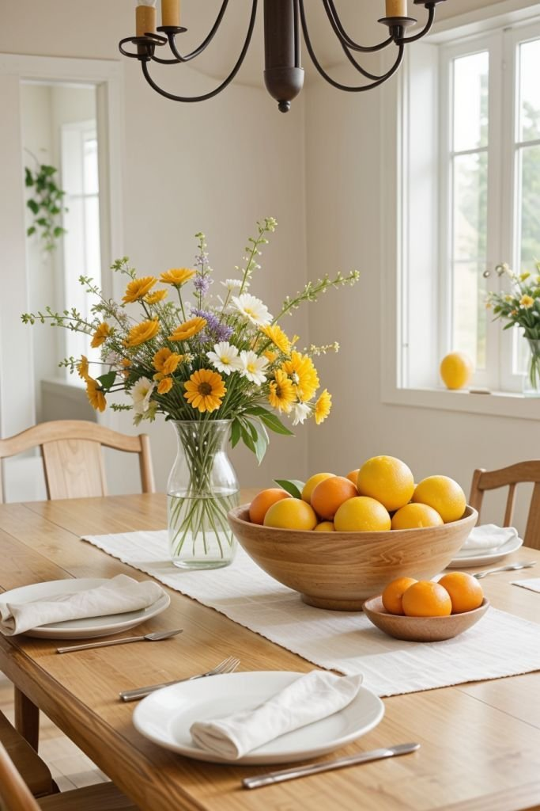
12. Candle Cluster for Cozy Dining Vibes
Candle centerpieces change the mood of a dining table almost instantly.
Even an ordinary weeknight meal starts to feel a little more intentional once a cluster of lit candles is on the table.
It's worth noticing how reliably restaurants lean on candlelight, there's a reason it shows up on nearly every table.

13. Single Statement Vase With Branches
This works especially well in a modern or minimalist dining room, where tall branches create real drama without introducing any clutter.
One confident, striking piece consistently outperforms five smaller, less memorable ones.
It's one of the lowest-effort ideas on this list in terms of actual assembly, while still making a genuine visual statement.
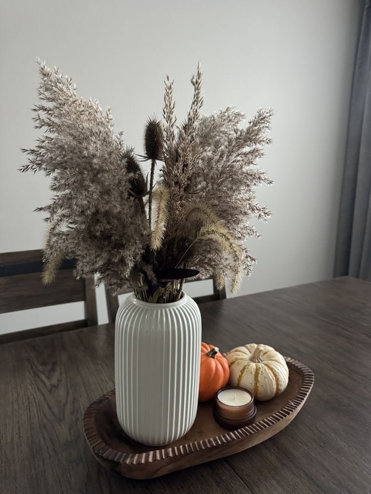
14. A Long Wooden Tray With Layered Decor
A long tray offers real flexibility for anyone who likes to restyle their table often.
Styled once with candles, small vases, and a bit of greenery, the whole arrangement can be tweaked in minutes rather than rebuilt from scratch.
The tray also keeps everything visually contained, which solves the common problem of centerpiece items looking scattered across the table.
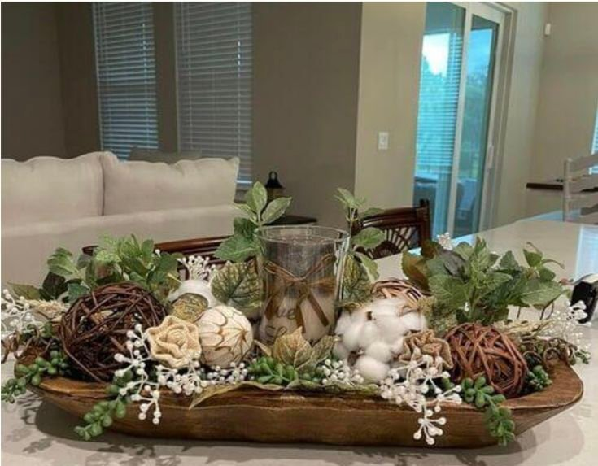
15. Low Floral Arrangement in a Neutral Vase
This idea never really goes out of style. A low floral arrangement adds softness to a table without blocking sightlines across it.
A neutral vase lets the flowers themselves do the visual work, rather than competing with a patterned or brightly colored container.
It suits both everyday meals and formal dinners equally well, no real drama involved, just consistent beauty.
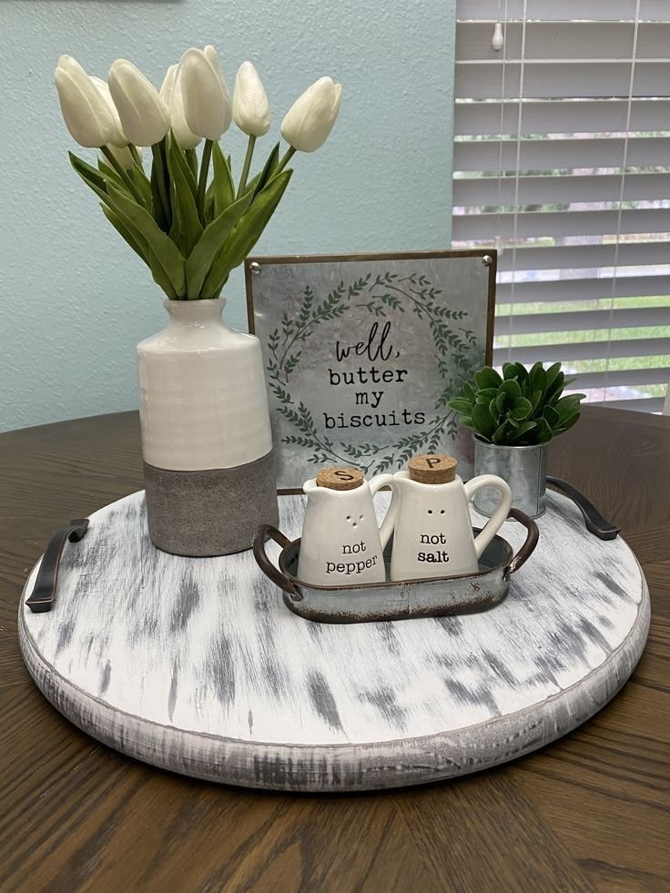
Final Thoughts
None of these fifteen ideas require a big investment to pull off. A low vase, a wooden tray, or even a simple bowl of fruit can anchor a dining table just as effectively as something elaborate.
The centerpieces that work best tend to be the ones that still leave room for actual dinner, style and function rarely have to compete for the same space on the table.